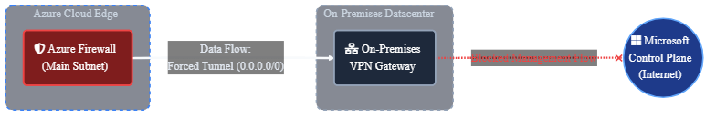
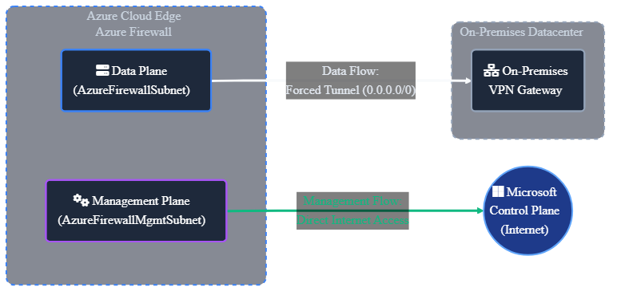

The Compliance Trap
The mandate usually comes down from the CISO on a Friday afternoon: "All traffic must be inspected on-premises. No exceptions."
It sounds reasonable on paper. You want unified policy enforcement, deep packet inspection (DPI) in your
trusted DMZ, and a single pane of glass for auditing. So, you implement Forced Tunneling.
You inject a 0.0.0.0/0 route via BGP or UDR that drags every single packet—from user requests
to Windows updates—back to your data center.
Then the alerts start firing.
"Why are my Windows VMs de-activating?"
"Why can't the Firewall update its threat intelligence?"
"Why are client connections resetting even though the firewall rule says Allow?"
The CISO's mandate isn't wrong—they are trying to enforce Zero Trust, prevent data exfiltration, and maintain regulatory compliance. However, Forced Tunneling is a legacy data-center approach applied to a cloud-native problem.
You didn't just route traffic. You broke the fundamental assumptions of the cloud. Here is how to implement Cloud-Native Zero Trust—satisfying the strict security mandates without sacrificing the operational integrity of your firewall.
The Architecture: A Simple Analogy
The "Over-Controlled Mailroom"
Imagine your Azure Firewall is a corporate Mailroom.
- The Job: Inspect all packages leaving the building to prevent data theft.
- The Rule (Forced Tunneling): "ALL outgoing mail must go to Head Office (On-Prem) for a second check."
The Problem: The Mailroom needs to order its own supplies (Security Updates) to keep working. When it tries to order, the rule forces the order to Head Office first. Head Office doesn't recognize the Mailroom's internal request and blocks it. The Mailroom shuts down.
The Solution: You need a "Staff Entrance" (Management Plane). Regular mail goes to Head Office, but the Mailroom's own supply orders go directly to the store (Internet).
1. The "Chicken-and-Egg" Crisis
Here is the hard truth: Azure Firewall is a managed service that needs to talk to its control plane.
When you force tunnel 0.0.0.0/0 to on-prem, you are telling the firewall: "To talk to Microsoft
Management, go through my on-prem Cisco ASA first."
The result? The firewall loses its heartbeat. It can't download the signature updates required to inspect the traffic you are sending it. It effectively blinds itself.
The Fix: Split the Planes
You must separate the Management Plane from the Data Plane. This is non-negotiable for Standard and Premium SKUs.
- AzureFirewallSubnet: This is for your data. You can force tunnel this all you want.
- AzureFirewallManagementSubnet: This is for Microsoft. It MUST have a direct route to the Internet.
Critical Warning: You cannot just "add" this subnet to a live firewall. It requires a stop/start (deallocate/allocate) cycle. Plan your maintenance window accordingly.
2. The Silent Connection Killer (Asymmetric Routing)
This is the most common reason for "phantom" connection drops.
The Scenario: An internet client connects to your web app via the Firewall's Public IP. The
firewall DNATs the traffic to your backend VM.
The Trap: Your backend VM has a default route to on-prem (via the forced tunnel).
The Result: The response packet leaves the VM, ignores the firewall, and tries to exit via
your ExpressRoute. The firewall never sees the ACK. The state table times out. The client connection hangs.
The Fix: Force Symmetry
You have two options, and "hoping for the best" isn't one of them:
- Parallel Ingress (Recommended): Don't use the Firewall for inbound HTTP/S. Use Azure Application Gateway or Front Door. They terminate the session and manage the return path locally.
- Strategic SNAT: Configure the firewall to SNAT inbound traffic. This forces the backend VM to reply to the Firewall's private IP, guaranteeing the return path. The trade-off? You lose visibility of the real client IP in your web logs (unless you pull it from X-Forwarded-For).
3. The Forensic Blind Spot
You forced tunneling to get better logs on-prem, right? Well, take a look at your Splunk dashboard.
You likely see terabytes of traffic originating from... one IP address.
By default, Azure Firewall SNATs traffic destined for public IPs to its own private IP. To your on-prem security appliance, every single user, app, and database in Azure looks like the Firewall. You have zero forensic visibility.
The Fix: The "Private" Range Hack
You need to tell Azure Firewall: "Do not SNAT anything."
Go to your Firewall Policy settings. Under Private IP Ranges, select "SNAT Common
IANA Routes"? No. Select "All IPs (0.0.0.0/0)".
This creates a "No SNAT" policy for everything. Now, your on-prem logs will see the real source
IP of your Azure VMs.
4. The "Activate Windows" Watermark
Suddenly, all your new VMs are reporting they aren't genuine. Why?
Windows Activation (KMS) servers check the source IP. If the request comes from an Azure public IP, it works. If it comes from your on-prem corporate gateway (because you forced tunneled it), Microsoft rejects it.
The Fix: The Specific UDR
You must bypass the tunnel for KMS. Add this route to your subnets:
Destination: 20.118.99.224/32 (azkms.core.windows.net)
Next Hop: InternetThis keeps the activation traffic on the Azure backbone, ensuring your licenses stay valid.
The Logic Board
For the architects, here is the flow diff:


5. The Implementation (Terraform)
The trick to deploying this via Infrastructure as Code is that you cannot retroactively apply Forced
Tunneling to an existing Azure Firewall. It must be declared at creation using the
management_ip_configuration block. By simply including this block, Azure automatically
provisions the firewall in Forced Tunneling mode.
resource "azurerm_firewall" "fw" {
name = "fw-hub-prod"
# ... (standard config) ...
# The Data Plane (Your forced traffic)
ip_configuration {
name = "data-ip-config"
subnet_id = azurerm_subnet.fw_data.id
public_ip_address_id = azurerm_public_ip.fw_data_pip.id
}
# THE FIX: The Management Plane (Microsoft's escape hatch)
management_ip_configuration {
name = "mgmt-ip-config"
subnet_id = azurerm_subnet.fw_mgmt.id
public_ip_address_id = azurerm_public_ip.fw_mgmt_pip.id
}
}Deployable Reference Architecture
I have published the complete, deployable Terraform module for this pattern—including the VNet, Subnets, Public IPs, and Route Tables—on my GitHub.
View the full Terraform code on GitHubVideo Vault (Must Watch)
Expert deep-dives into Azure Firewall architecture and terminology.


Summary
Forced Tunneling is a powerful architectural pattern, but it is not a "toggle and forget" setting. It requires a deliberate redesign of your routing, management planes, and egress paths.
Don't let "compliance" become code for "outage."
Ready to operationalize your Azure journey?
Stop guessing with your network security.